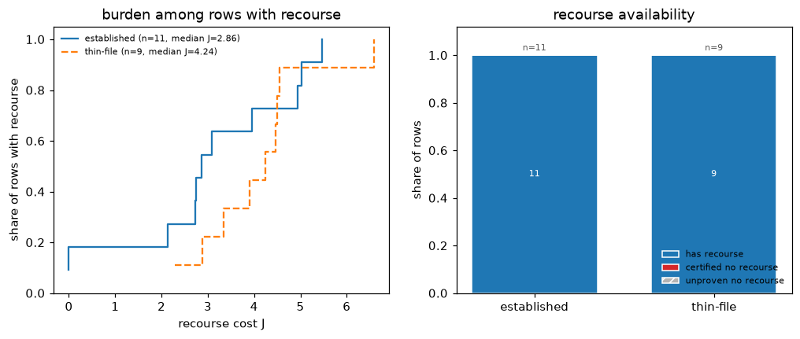

Auditability¶
What a validator, an internal auditor, or a supervisor can check without trusting you, and the call that checks it. Nothing on this page is a new feature; it is the existing surface arranged around one question: given these files, what can I re-derive myself?
The artifacts¶
| Artifact | What it proves | How to verify it |
|---|---|---|
Explainer.certificate(x, result, target) |
The full solve, frozen: model fingerprint, constraint fingerprints, target bounds, the plan, its float-verified scores, solver statistics, and — for a region — the certified intervals and category sets | check_certificate on the model and constraints the validator was handed; every mismatch is named, never summarized away |
check_certificate(cert) report |
model_match (the ensemble was not swapped), constraints_match (the rule set was not changed), verification_ok (the stored plan still routes to the stored score) |
Read mismatches: one human-readable string per failure; an empty list is the pass |
check_certificate(cert, calibrator=...) |
That a calibrated-target plan was solved against this calibrator: fingerprint match plus a re-inversion of the stored calibrated bounds against the stored raw interval | Load the calibrator from its own JSON, pass it in (calibration) |
BatchResult.save / load |
A portable record of a whole campaign: per-row plans, proofs, seeds, solver statistics, calibrator fingerprints | The file is inert JSON — no pickle, no code execution on load; every 0.x release reads every earlier file (API stability) |
ir_fingerprint(exp.ir) / constraints_fingerprint(exp) |
Identity of the parsed model and the compiled constraint set — the same hashes certificates embed | Recompute on the artifact in front of you and compare with what the certificate or report recorded |
The chain is short and each link is a hash: the certificate names the model
and constraint fingerprints it was solved under, check_certificate
recomputes both and re-verifies the plan, and a batch file carries the same
identifiers row by row.
A verification session¶
The realistic hand-off is two files: the model dump and the certificate. The block below produces that pack and then verifies it the way a reviewer would — reload, fingerprint-match, re-verify:
# exp, x, target, res: the docs explainer, applicant, target, and solved plan
import json
cert = exp.certificate(x, res, target, seed=0)
stored = json.dumps(cert, allow_nan=False, sort_keys=True) # file it with the decision
# --- the reviewer's side: the dump file and the certificate ---
report = exp.check_certificate(json.loads(stored))
assert report["model_match"] # the ensemble was not swapped
assert report["constraints_match"] # the rule set was not changed
assert report["verification_ok"] # the stored plan still verifies
assert report["mismatches"] == []
In a real review the Explainer on the reviewer's side is constructed
independently, from the dump and constraint list the reviewer was handed —
that independence is the point: a certificate checked against the producer's
own in-memory objects proves only self-consistency.
Certificates carry a schema_version; the current version stores region
category sets, the previous one is still verified, and an unknown version is
reported as a mismatch rather than guessed at. The compatibility promise is
pinned by committed golden files in CI, not asserted in prose
(API stability).
Reading a campaign honestly¶
recourse_burden_table and plot_recourse_burden summarize a verified
batch by segment — and keep the feasible share and the cost distribution
side by side deliberately: a group's low median cost means nothing without
its feasibility rate next to it, because the median is taken over the plans
that exist, not the people who needed one.

What this does not prove¶
A certificate is a statement about the artifact, not the world. It does not
prove the model is any good, that the applicant can execute the plan in
life, or that the deployed system actually scores with this model — only a
fingerprint recorded by the deployed system can do that, which is why the
fingerprints exist. And it does not survive a changed problem: swap the
model, the constraints, or the plausibility bound, and check_certificate
says so instead of carrying anything over. The full scope statement is in
Certification — what a certificate covers.
Related¶
- Certify and widen: producing the claims worth auditing.
- Certification: proof taxonomy, budgets, honesty notes.
- Calibration: calibrator provenance inside certificates.
- Visualize: reading a campaign at a glance once its records are verified.